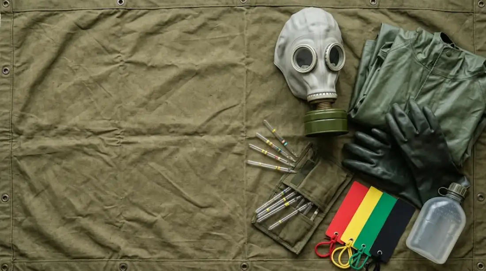

Військово-медична підготовка та медицина надзвичайних ситуацій
Практичні заняття
Оберіть заняття, яке назвав викладач. У кожному є підсумковий контроль на оцінку і тренування з відповідями.

Заняття № 5Завдання та зміст військово-польової терапії. Бойовий стрес, посттравматичний стресовий розлад. Медико-тактична характеристика ядерної зброї. Радіаційні ураження.

Заняття № 6Особливості хімічної зброї. Медико-тактична характеристика осередку хімічного зараження. Ураження бойовими отруйними речовинами. Техніка безпеки.

Заняття № 10Організація санітарно-гігієнічних і протиепідемічних заходів у надзвичайних ситуаціях. Екстрена медична допомога при масових ураженнях у мирний та воєнний час.
Заняття № 7–9Будуть додані згодом